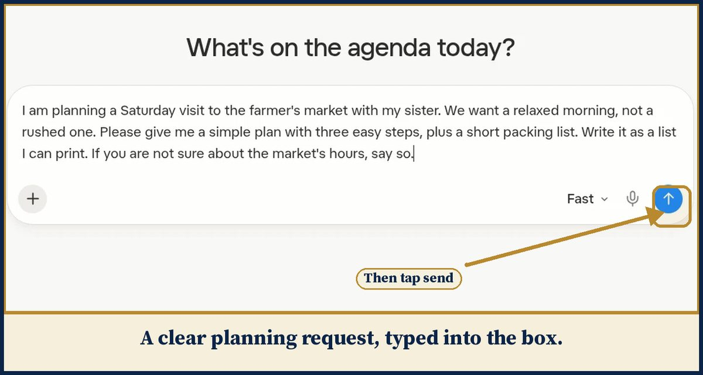
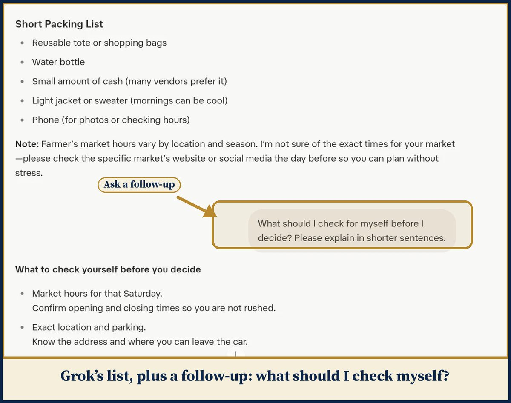

Lesson 3 of 8
Learn something new, or plan something real
In Lesson 2, we used Grok to draft a note, then changed it so it sounded like you. Today we will use Grok to explain a topic in plain words, or to help plan a real task, and then check the answer.
Treat the answer like advice from a helpful stranger. Useful, not final.
Good uses for today
You can ask things like:
- Explain this in everyday language.
- Help me plan a weekend visit.
- Give me a packing list.
- What questions should I bring to this appointment?
Here is a clear planning request you can adapt.
A clear planning request
I am planning a Saturday visit to the farmer’s market with my sister. We want a relaxed morning, not a rushed one. Please give me a simple plan with three easy steps, plus a short packing list. Write it as a list I can print. If you are not sure about the market’s hours, say so.

Ask Grok to show its work
You can also ask Grok to list sources, or to give both sides of a choice. After the first answer, try a follow-up like:
- Please explain this in shorter sentences.
- What might you have gotten wrong?
- Give me both sides of this choice, in plain words.
- What should I check for myself before I decide?

The key habit: check anything that matters
Grok can be wrong, and it can sound sure when it is guessing. That is why we check.
If the answer includes a date, a price, a health claim, a money figure, or anything about the law, look it up in a source you already trust. That might be a website you know, a book on your shelf, or a person you would ask anyway.
If a result includes a link or a phone number, confirm it on the organization’s own site, or use a number you already have. Do not call a number from an answer you have not checked.
If something looks off, you can ask, “Are you sure?” or “Please say what you might have gotten wrong.” Then verify.
A safety note
Do not make a medical, legal, or money decision from an AI answer alone. Grok can help you get ready. It is not a doctor, a lawyer, or a bank.
Try it today
Pick one real plan, or one topic you have been curious about. Ask Grok to explain it in short sentences, or to outline the next three steps. Then check one fact in the answer against a website, a book, or a person you already trust.